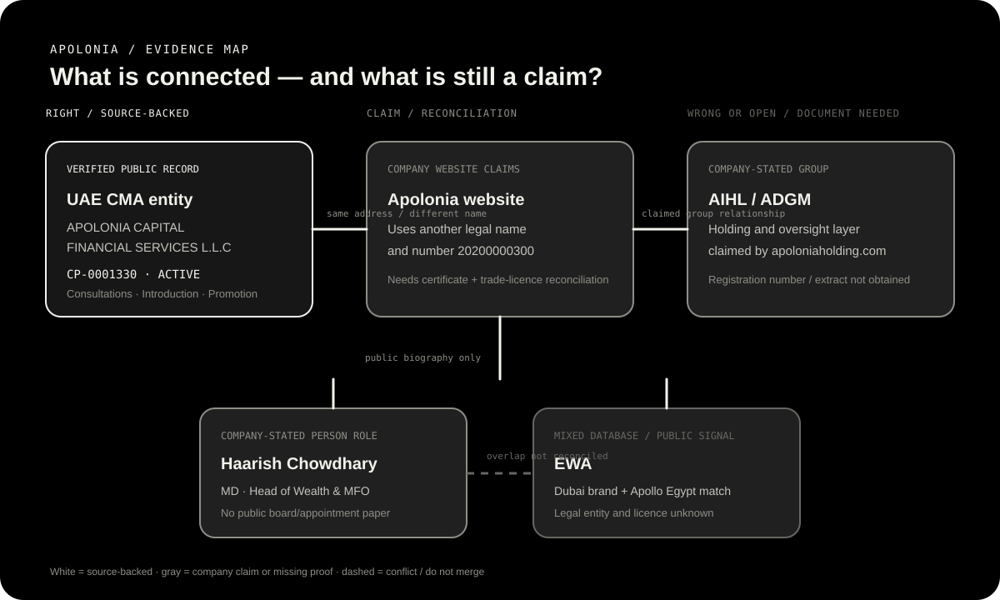

VERIFIED PUBLIC RECORD
Entity
Active CMA record: APOLONIA CAPITAL FINANCIAL SERVICES L.L.C, CP-0001330, established 23 October 2024. CMA record
Main company report · 19 September 2026
The evidence points to a young UAE advisory business with an active CMA record. The record is real, but the wider group, licence naming, service scope, track record and Haarish’s legal authority still need documents.
APOLONIA CAPITAL FINANCIAL SERVICES L.L.C, company code CP-0001330. It lists Financial Consultations, Introduction and Promotion. Apolonia’s own disclaimer says its wider investment banking, asset, wealth, MFO, venture and securities services are future plans, not currently licensed by CMA.01 · dashboard
The table below separates public proof from company language and missing papers.
Active CMA record: APOLONIA CAPITAL FINANCIAL SERVICES L.L.C, CP-0001330, established 23 October 2024. CMA record
Financial Consultations, Introduction and Promotion. No public proof that the current entity can manage a fund, hold assets or act as custodian.
The site uses another legal name and 20200000300. The captured CMA lookup did not match that number.
AIHL says it is ADGM-established and is the group holding layer. No registration number or official extract was obtained.
Public team claims 250+ combined-career mandates. Odoo shows a customer reference. No named, client-consented closed deal was verified.
Apolonia publishes his Managing Director / Head of Wealth Management & MFO profile. Legal director, board and EWA status remain open.
02 · open questions
These answers are also expanded in the Markdown version and in the separate Haarish report.
| Question | Current answer | What would close it |
|---|---|---|
| EWA legal name and registration? | Unknown The public brand is visible, but the legal name and registration number were not found on LinkedIn or ewa.group. | Trade licence, incorporation record, owners and domain-control proof. |
| EWA licence? | Not established No official financial licence was verified in the bounded checks. | Exact legal name searched in the Dubai route, DFSA, ADGM/FSRA and CMA. |
| Haarish’s EWA capacity? | Unresolved Apollo/public profile says CEO; EWA page shows only Keith Nettles; no ownership or appointment document. | Company documents and dated employment/appointment record. |
| Why did Apollo match an Egyptian logistics company? | No explanation The company record does not fit Dubai EWA; treat it as a mixed/wrong database match. | Correct Apollo organisation ID or company-provided legal record. |
| Why only Keith Nettles? | Unknown LinkedIn employee fields can be incomplete, or Haarish may not be an employee of the legal entity. | Owners, directors, employees/contractors list and role explanation. |
| Is Haarish still linked to EWA and Apolonia? | Signals overlap Apollo May 2025 EWA lead, public EWA headline and current Apolonia biography overlap. | Dated CV, legal employers, conflict disclosure. |
| What supports the Apolonia title? | Company-stated Apolonia biography + secondary HR Today result; no appointment letter or regulator filing. | Appointment letter, contract and exact employing entity. |
| What does “board member” mean? | Not answered Could be director, observer, adviser or investment committee. | Named entity, board resolution, voting/liability/fee terms. |
| Who signs and receives fees? | Unknown The CMA entity is the likely candidate, but the website name/number differs and AIHL is a separate claimed layer. | Contract, invoice name, bank beneficiary and licence scope. |
| Can anyone hold investor/client money? | No public support Apolonia’s disclaimer says no client money/assets or custody unless separately authorised. EWA is unknown. | Written custody flow and separate bank/custodian/manager evidence. |
| Which regulator is involved? | Depends on structure CMA is tied to Apolonia; ADGM/FSRA, SEBI, IFSCA or RBI/FEMA depend on the actual vehicle and activity. | Legal vehicle, product, country and written regulatory-perimeter memo. |
| Can former employers confirm Haarish? | Not yet Public pages and Apollo are leads; no employer confirmation was obtained. | Written permission and official HR/reference checks. |
03 · identity and licence
Apolonia should be identified from the regulator outward, not from the website inward.
CP-0001330500000.0 (currency not stated in the raw response)The website’s regulatory disclaimer, terms and privacy policy use this name and licence number 20200000300. The captured CMA search for that exact number returned no matching company detail. Do not silently merge the two identifiers.
04 · permitted work
| Website area | Live claim | Safe reading today |
|---|---|---|
| Corporate finance / M&A | Investment-banking page lists IPOs, private placements, M&A and structuring. | Public service claim. The disclaimer says Investment Banking is not currently licensed/offered by CMA. |
| Asset management | Asset page says “intends” to manage/direct capital and funds. | Future plan, not proven current permission. |
| Wealth / MFO | Wealth page and MFO page describe planned platforms. | Future or planned services; not current CMA proof. |
| AIHL / Ventures | AIHL describes a holding layer; Ventures page says it will become a VC fund vertical. | Group claim and future plan; ADGM extract and fund approvals still needed. |
| Broken routes | The visible routes /apolonia-ventures/ and /securities-services-solutions/, plus legacy query links, were captured as 404. | Website navigation/control issue; see the working offerings page and saved page-status manifest. |
05 · dated record
RDAP shows a registration event for apoloniacapital.com. A domain is not incorporation proof. RDAP
The CMA record gives the established date for the active Apolonia entity. CMA record
CMA search result recorded the company under registry year 2025; Ali Nadir’s activity accreditation is 24 Jun 2025. CMA record
A PRNewswire release used the phrase “full regulatory licence.” It is a press release; the live CMA record and exact activities are stronger evidence. PRNewswire
CMA capture records Jinoy Manoharan as Head of Compliance on 7 Nov and Sheridzma Lina Ladjbangsa as Promotion Manager on 11 Dec.
CMA capture records Mohamed Shihab as Financial Analyst.
Current home, team, offerings, disclaimer, event and biography pages are live. Some offering routes are dead, and the AIHL site presents future group verticals. Apolonia team
06 · people and structure
Titles on a marketing page are not automatically legal authority. Separate statutory roles, CMA-approved activity roles and advisory titles.

Ali Nadir Syed, Jinoy Manoharan, Mohamed Shihab and Sheridzma Lina Ladjbangsa appear in activity-linked rows. Haarish does not appear in those rows. CMA record
The AIHL site describes long-term ownership and governance from ADGM, but no official registration number or extract was obtained.
It could mean statutory director, advisory-board member, board observer, investment-committee member, nominee for an SPV or informal shorthand. No public document reviewed proves Haarish has any of these roles. Request the exact entity, appointment/resolution, voting rights, liability, fees/equity and removal terms.
07 · supporting people report
The public biography and team page state the title. His public joining post and later Apolonia activity article support a public operating relationship. This is not an appointment letter, board resolution or CMA approval.
Apollo/public EWA signals place Haarish at EWA from May 2025, while Apolonia publishes his current biography. A UAE Stories profile also called him EWA CEO and Strategic Advisor in February 2026. Apollo’s EWA organisation match points to an Egyptian logistics company, so that company match is not safe proof.
Haarish is not shown in the captured CMA activity-linked employee rows. No public document reviewed proves he is a statutory Apolonia director, board member, owner or person allowed to receive client money. Read the separate Haarish report for the career timeline, EWA questions and verification checklist.
08 · proof boundary
No exact, identity-matched public result was found in the bounded searches for POSH, sexual harassment, police, fraud, scam, lawsuit or court dispute. That is not a clean-record certificate. Read the linked case search, harassment search and review search.
09 · action
CMA certificate, trade licence, incorporation certificate, written reconciliation of CP-0001330 and 20200000300, plus AIHL ADGM extract.
Haarish appointment, dated CV, exact employer, board paper if any, conflict statement and former-employer confirmation with permission.
Contract entity, fees, beneficiary, custody flow, licensed bank/custodian/administrator and written regulatory-perimeter memo.
Recommendation: run only a small, non-exclusive, document-gated pilot for a defined advisory/introduction task. Do not give exclusivity, investor lists, client assets or public endorsement before the documents are checked.
10 · saved evidence
Narrative claims have inline public links. Saved machine-readable evidence is kept separately and contains no credentials, passwords, tokens, browser sessions or raw private Apollo response.
{kind=link}